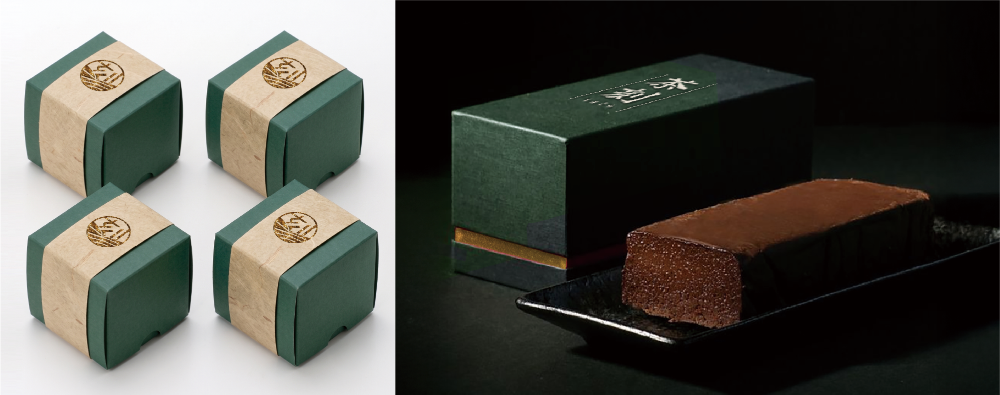
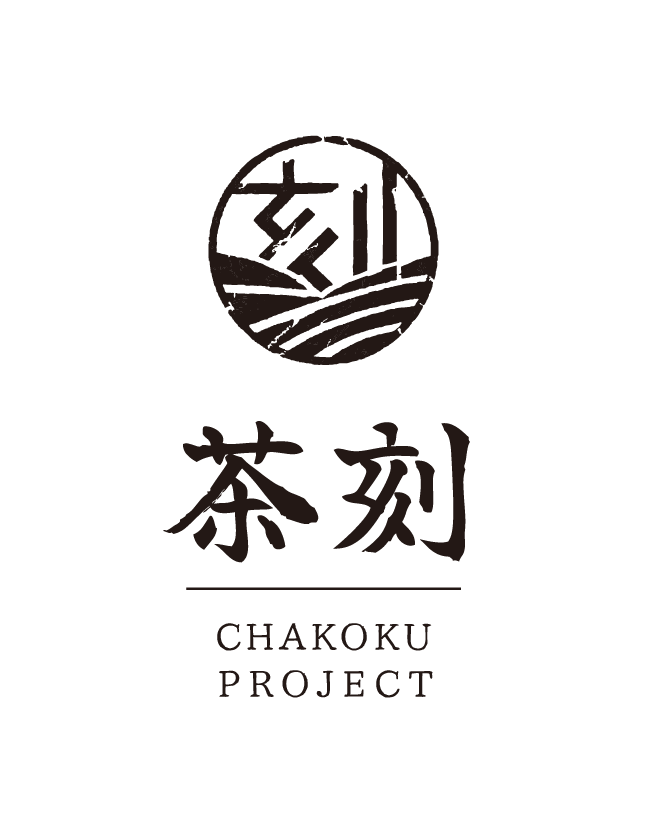
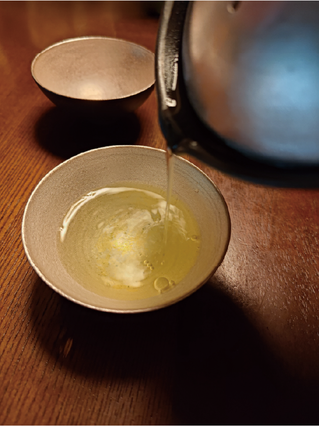
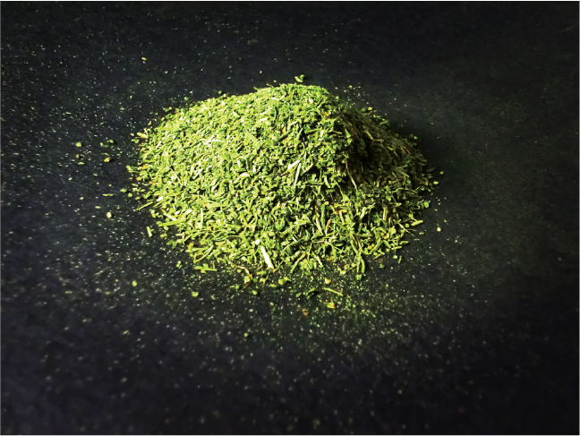

← BACK TO WORKS
茶刻プロジェクト
GRAPHIC
ブランディング

八女茶を中心に、人·土地·文化をつなぎ、新しい「茶の時間」を提案する架空のブランドプロジェクト。 「八女茶を楽しむ」をテーマに、チョコレートや器、茶に関わる人々や場所に焦点を当ててプランドを展開し ロゴ、バッケージ、ブランドブック、リーフレット、LPなど、一貫したブランドツールを作成。



- Project
- 習作 茶刻プロジェクト
- Category
- ブランディング
- 制作
- 2026年7月